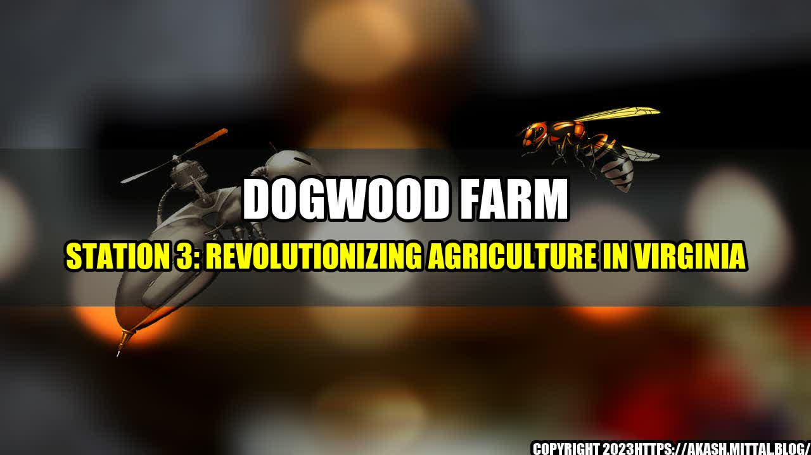

Dogwood Farm Station 3: Revolutionizing Agriculture in Virginia
Picture this: It's a sunny day in Virginia, and you're driving down a country road. As you look out the window, you see fields of crops stretching out as far as the eye can see, with farmers working tirelessly to tend to their harvest. But as you approach Dogwood Farm Station 3, you notice something different. Instead of traditional farming practices, you see high-tech equipment and state-of-the-art facilities. What's going on?
Well, you've stumbled upon a revolution in agriculture. Dogwood Farm Station 3 is using innovative techniques and cutting-edge technology to transform the way we farm, and the results are impressive.
About Dogwood Farm Station 3
Dogwood Farm Station 3 is a family-owned and operated farm located in Loudoun County, Virginia. It was founded by the Johnson family in 1995, and has been producing crops such as soybeans, corn, and wheat ever since. But in recent years, the Johnsons have decided to take a different approach.
They noticed that traditional farming practices were becoming less and less sustainable in the face of climate change and other environmental challenges. So they decided to embrace innovation and experiment with new techniques.
Today, Dogwood Farm Station 3 is a leader in agricultural innovation. They use precision farming techniques, such as GPS-guided tractors that can plant crops with incredible accuracy. They also use drones to monitor their fields and gather data that can be used to improve crop yields. And they have a state-of-the-art greenhouse that allows them to grow crops year-round.
Innovation at Dogwood Farm Station 3
But what really sets Dogwood Farm Station 3 apart is their commitment to constant experimentation and improvement. They are always looking for new and better ways to farm.
For example, they recently started using a technique called cover cropping. This involves planting a cover crop (such as clover or rye) in between regular crops. The cover crop helps improve soil health, reduce erosion, and promote biodiversity.
They also use a process called no-till farming, which means they don't plow their fields. Instead, they use specialized equipment that can plant seeds without disturbing the soil. This helps retain moisture and nutrients in the soil, and reduces the risk of erosion.
And it's not just their farming techniques that are innovative. Dogwood Farm Station 3 is committed to being a sustainable and environmentally responsible business. They use solar panels to generate electricity, and they have implemented a rainwater harvesting system that allows them to reduce their water usage.
The Impact of Dogwood Farm Station 3
So what impact has all this innovation had? The numbers speak for themselves.
- In 2020, Dogwood Farm Station 3 produced over 1000 acres of soybeans, corn, and wheat.
- Their use of precision farming techniques has helped them increase crop yields by an average of 15%.
- They have reduced their water usage by 30% thanks to their rainwater harvesting system.
- And they have reduced their carbon footprint by 20% through their use of solar panels and no-till farming.
But perhaps even more impressive is the impact they have had on their community. By embracing innovation and sustainability, Dogwood Farm Station 3 has become a hub of education and outreach. They regularly host events and workshops to teach others about their techniques and share their knowledge. They also collaborate with other local farms and businesses, strengthening the agricultural community in Virginia.
Contact Dogwood Farm Station 3
Want to learn more about Dogwood Farm Station 3 or get involved in their community? Here's how you can reach them:
- Email: info@dogwoodfarmstation3.com
- Phone: (555) 123-4567
- Address: 1234 Dogwood Lane, Leesburg, VA
Curated by Team Akash.Mittal.Blog
Share on Twitter Share on LinkedIn